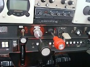

I’ve been asked this question a lot. Most recently by James who’s an active Online Ground School member. “How and why do we lean the mixture?”
Ask that question around an airport and you might find a lot of answers. Someone once taught me… “Lean it out until the engine quits then screw it back in 3 times!” … I think they were serious is the scary part 
In the video below I’m going to share with you why we lean and some different scenarios when you should be full rich or lean. I’ll also present to you two performance areas of leaning “lean of peak” and “rich of peak”
Check out the video below and let me know what you think… Enjoy! – Jason
REMEMBER: Every performance chart you read is based on you properly leaning the aircraft. Everything from gallons per hour to RPM and true airspeed. I encourage you to get more comfortable with the leaning procedures for your airplane as it will help you to fly more efficiently just as the engineers designed it.
Still have a question on how to lean your airplane? Or maybe you have a comment about something I said?
Leave me a comment below. I’d love to hear from you.